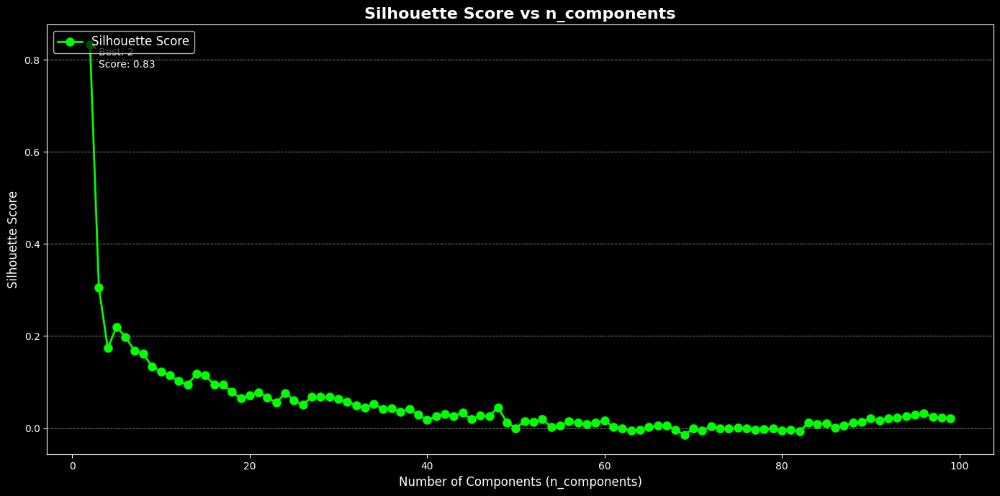
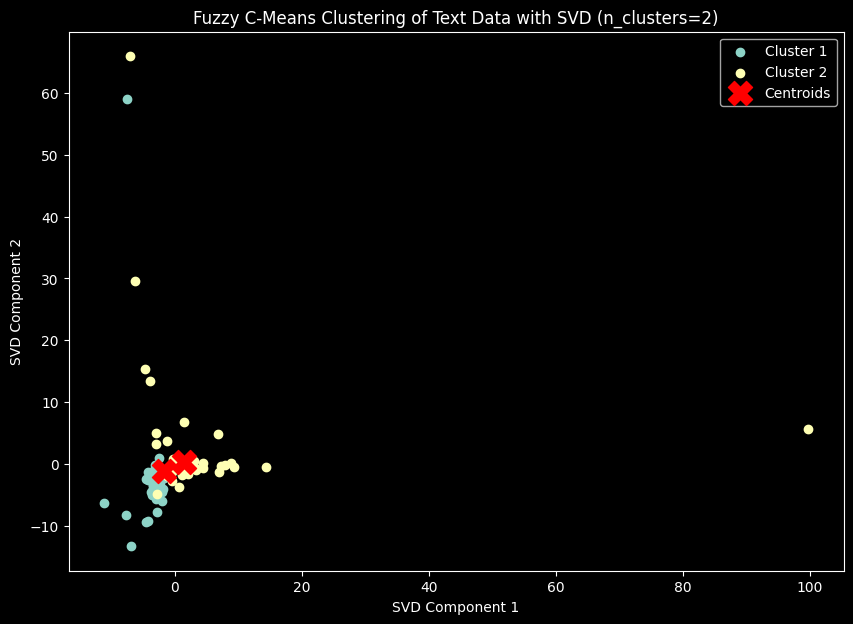
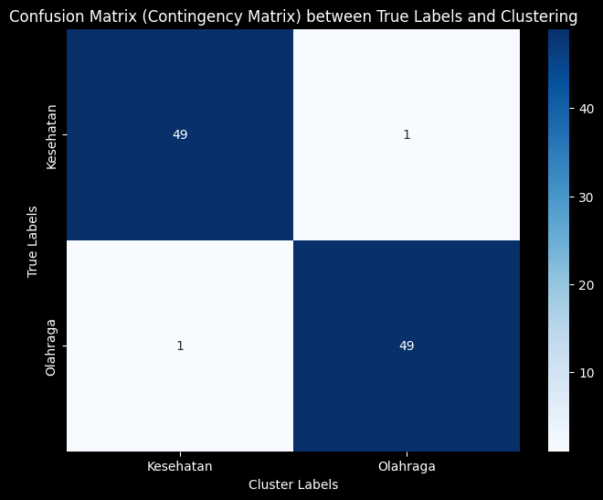

Tugas - 8 Clustering menggunakan Fuzzy C Means#
!pip install fuzzy-c-means
import pandas as pd
import numpy as np
from sklearn.feature_extraction.text import TfidfVectorizer
from sklearn.preprocessing import StandardScaler
from sklearn.decomposition import TruncatedSVD # Import TruncatedSVD untuk reduksi dimensi
import matplotlib.pyplot as plt
from fcmeans import FCM
from sklearn.metrics import silhouette_score
Requirement already satisfied: fuzzy-c-means in /usr/local/lib/python3.10/dist-packages (1.7.2)
Requirement already satisfied: joblib<2.0.0,>=1.2.0 in /usr/local/lib/python3.10/dist-packages (from fuzzy-c-means) (1.4.2)
Requirement already satisfied: numpy<2.0.0,>=1.21.1 in /usr/local/lib/python3.10/dist-packages (from fuzzy-c-means) (1.26.4)
Requirement already satisfied: pydantic<3.0.0,>=2.6.4 in /usr/local/lib/python3.10/dist-packages (from fuzzy-c-means) (2.9.2)
Requirement already satisfied: tabulate<0.9.0,>=0.8.9 in /usr/local/lib/python3.10/dist-packages (from fuzzy-c-means) (0.8.10)
Requirement already satisfied: tqdm<5.0.0,>=4.64.1 in /usr/local/lib/python3.10/dist-packages (from fuzzy-c-means) (4.66.6)
Requirement already satisfied: typer<0.10.0,>=0.9.0 in /usr/local/lib/python3.10/dist-packages (from fuzzy-c-means) (0.9.4)
Requirement already satisfied: annotated-types>=0.6.0 in /usr/local/lib/python3.10/dist-packages (from pydantic<3.0.0,>=2.6.4->fuzzy-c-means) (0.7.0)
Requirement already satisfied: pydantic-core==2.23.4 in /usr/local/lib/python3.10/dist-packages (from pydantic<3.0.0,>=2.6.4->fuzzy-c-means) (2.23.4)
Requirement already satisfied: typing-extensions>=4.6.1 in /usr/local/lib/python3.10/dist-packages (from pydantic<3.0.0,>=2.6.4->fuzzy-c-means) (4.12.2)
Requirement already satisfied: click<9.0.0,>=7.1.1 in /usr/local/lib/python3.10/dist-packages (from typer<0.10.0,>=0.9.0->fuzzy-c-means) (8.1.7)
from google.colab import drive
drive.mount('/content/drive')
Drive already mounted at /content/drive; to attempt to forcibly remount, call drive.mount("/content/drive", force_remount=True).
import pandas as pd
df = pd.read_csv("/content/drive/My Drive/ppw/report/tugas-ppw/data_preprocessing.csv")
df.head()
| judul | tanggal | isi | kategori | cleansing | case_folding | tokenize | stopword_removal | kategori_encoded | |
|---|---|---|---|---|---|---|---|---|---|
| 0 | Awas! Kebiasaan Sepele Ini 26 Persen Lebih Tin... | Rabu, 27 Nov 2024 19:02 WIB | Jakarta - Stroke merupakan salah satu kondisi ... | Kesehatan | Jakarta Stroke merupakan salah satu kondisi m... | jakarta stroke merupakan salah satu kondisi m... | ['jakarta', 'stroke', 'merupakan', 'salah', 's... | jakarta stroke salah kondisi medis menurunkan ... | 0 |
| 1 | Berlebihan Makan Petai Bisa Picu Ginjal Rusak,... | Rabu, 27 Nov 2024 18:02 WIB | Jakarta - Petai atau parkia speciosa merupakan... | Kesehatan | Jakarta Petai atau parkia speciosa merupakan ... | jakarta petai atau parkia speciosa merupakan ... | ['jakarta', 'petai', 'atau', 'parkia', 'specio... | jakarta petai parkia speciosa tanaman asia ten... | 0 |
| 2 | Pria Tertua di Dunia Meninggal di Usia 112, Su... | Rabu, 27 Nov 2024 16:52 WIB | Jakarta - Pria yang dinobatkan sebagai orang t... | Kesehatan | Jakarta Pria yang dinobatkan sebagai orang te... | jakarta pria yang dinobatkan sebagai orang te... | ['jakarta', 'pria', 'yang', 'dinobatkan', 'seb... | jakarta pria dinobatkan orang tertua dunia ver... | 0 |
| 3 | Gejala Wasir (Ambeien), Penyebab, dan Cara Men... | Rabu, 27 Nov 2024 16:47 WIB | Jakarta - Wasir sama dengan ambeien. Keduanya ... | Kesehatan | Jakarta Wasir sama dengan ambeien Keduanya me... | jakarta wasir sama dengan ambeien keduanya me... | ['jakarta', 'wasir', 'sama', 'dengan', 'ambeie... | jakarta wasir ambeien nama penyakit hemoroid p... | 0 |
| 4 | Jangan Abaikan Kelelahan, Catat Tips Biar Petu... | Rabu, 27 Nov 2024 16:03 WIB | Jakarta - Kelompok Penyelenggara Pemungutan Su... | Kesehatan | Jakarta Kelompok Penyelenggara Pemungutan Sua... | jakarta kelompok penyelenggara pemungutan sua... | ['jakarta', 'kelompok', 'penyelenggara', 'pemu... | jakarta kelompok penyelenggara pemungutan suar... | 0 |
texts = df['stopword_removal']
# Step 2: Vektorisasi TF-IDF
tfidf_vectorizer = TfidfVectorizer()
tfidf_matrix = tfidf_vectorizer.fit_transform(texts)
X_tfidf = tfidf_matrix.toarray()
scaler = StandardScaler()
X_scaled = scaler.fit_transform(X_tfidf)
# Mendapatkan nama fitur dari TF-IDF
feature_names = tfidf_vectorizer.get_feature_names_out()
# Konversi TF-IDF hasil training ke DataFrame
df_train_tfidf = pd.DataFrame(tfidf_matrix.toarray(), columns=feature_names)
df_train_tfidf
df_train_tfidf.to_csv("tf-idf.csv", index=False)
X_tfidf.shape
(100, 4863)
from sklearn.metrics import adjusted_rand_score, normalized_mutual_info_score
from fcmeans import FCM
from sklearn.decomposition import TruncatedSVD
from sklearn.preprocessing import StandardScaler
import numpy as np
# Pastikan X_scaled sudah terdefinisi sebelumnya
# Inisialisasi variabel untuk menyimpan hasil
best_silhouette = -1
best_ari = -1
best_nmi = -1
best_n_components = 0
results = {}
# Asumsikan y_true adalah label asli dari dataset Anda
y_true = df['kategori'] # Ganti 'kategori' dengan nama kolom label asli
for n in range(2, 100): # Rentang nilai n_components
svd = TruncatedSVD(n_components=n, random_state=42)
data_reduced = svd.fit_transform(X_scaled)
# Fuzzy C-Means Clustering
fcm = FCM(n_clusters=2, m=2.0, max_iter=1000, error=0.001, random_state=42)
fcm.fit(data_reduced)
cluster_labels = fcm.predict(data_reduced)
# Evaluasi dengan Silhouette Score, ARI, dan NMI
silhouette = silhouette_score(data_reduced, cluster_labels)
ari = adjusted_rand_score(y_true, cluster_labels)
nmi = normalized_mutual_info_score(y_true, cluster_labels)
results[n] = {
'silhouette': silhouette,
'ari': ari,
'nmi': nmi
}
# Log setiap iterasi
print(f"Iterasi dengan n_components={n}: Silhouette={silhouette}, ARI={ari}, NMI={nmi}")
# Perbarui nilai terbaik
if silhouette > best_silhouette:
best_silhouette = silhouette
best_n_components = n
if ari > best_ari:
best_ari = ari
if nmi > best_nmi:
best_nmi = nmi
Iterasi dengan n_components=2: Silhouette=0.8337772933307168, ARI=0.002427096100870114, NMI=0.0513556720154113
Iterasi dengan n_components=3: Silhouette=0.3048042224095639, ARI=0.28502803547762257, NMI=0.2626148014340699
Iterasi dengan n_components=4: Silhouette=0.17374400175853444, ARI=0.48515105906537936, NMI=0.46366215811612455
Iterasi dengan n_components=5: Silhouette=0.2197056713099808, ARI=0.6363502791654423, NMI=0.5407862117028416
Iterasi dengan n_components=6: Silhouette=0.19800520414265102, ARI=0.6691233181935041, NMI=0.6022111600455702
Iterasi dengan n_components=7: Silhouette=0.16822404893884996, ARI=0.9208, NMI=0.8585594574581795
Iterasi dengan n_components=8: Silhouette=0.16118622632818394, ARI=0.6690692994951206, NMI=0.5697389043881019
Iterasi dengan n_components=9: Silhouette=0.13381355568091768, ARI=0.8080620079101718, NMI=0.7149460394223505
Iterasi dengan n_components=10: Silhouette=0.12268153836396324, ARI=0.8080620079101718, NMI=0.7149460394223505
Iterasi dengan n_components=11: Silhouette=0.11422312943790454, ARI=0.6690584936388014, NMI=0.564205452925309
Iterasi dengan n_components=12: Silhouette=0.10225114173159909, ARI=0.6044056963032804, NMI=0.5006054392285263
Iterasi dengan n_components=13: Silhouette=0.09422935681374459, ARI=0.42984314349737346, NMI=0.3425675669167147
Iterasi dengan n_components=14: Silhouette=0.11758695061244309, ARI=0.40358524758779446, NMI=0.32091195187981514
Iterasi dengan n_components=15: Silhouette=0.11430834120343482, ARI=0.7026007738649165, NMI=0.6009721799981695
Iterasi dengan n_components=16: Silhouette=0.09438248445117148, ARI=0.7369439308410987, NMI=0.6349910030198423
Iterasi dengan n_components=17: Silhouette=0.09375929134939245, ARI=0.7025959183673469, NMI=0.5978208097977278
Iterasi dengan n_components=18: Silhouette=0.07858604290472575, ARI=0.7369696969696969, NMI=0.6597573034496935
Iterasi dengan n_components=19: Silhouette=0.06407715515169664, ARI=0.5430750584576962, NMI=0.4644224376637692
Iterasi dengan n_components=20: Silhouette=0.07129218817602614, ARI=0.5430303030303031, NMI=0.4532839480340868
Iterasi dengan n_components=21: Silhouette=0.07665527361403152, ARI=0.7721314419105764, NMI=0.7287008798015754
Iterasi dengan n_components=22: Silhouette=0.06710135148700619, ARI=0.6690909090909091, NMI=0.5816101791805874
Iterasi dengan n_components=23: Silhouette=0.05478798866515124, ARI=0.5734012339633728, NMI=0.5040175340948666
Iterasi dengan n_components=24: Silhouette=0.07646445831655266, ARI=0.6363502791654423, NMI=0.5407862117028416
Iterasi dengan n_components=25: Silhouette=0.060129472644869966, ARI=0.5430750584576962, NMI=0.4644224376637692
Iterasi dengan n_components=26: Silhouette=0.05004805004610285, ARI=0.6364215062187837, NMI=0.5760367196319857
Iterasi dengan n_components=27: Silhouette=0.06827828053876407, ARI=0.7369439308410987, NMI=0.6349910030198423
Iterasi dengan n_components=28: Silhouette=0.06803329804628704, ARI=0.7026007738649165, NMI=0.6009721799981695
Iterasi dengan n_components=29: Silhouette=0.06751353875263542, ARI=0.7026007738649165, NMI=0.6009721799981695
Iterasi dengan n_components=30: Silhouette=0.06310564928572981, ARI=0.6691233181935041, NMI=0.6022111600455701
Iterasi dengan n_components=31: Silhouette=0.057392599929617906, ARI=0.6363799604956006, NMI=0.5541718004161501
Iterasi dengan n_components=32: Silhouette=0.0497617067418565, ARI=0.6364215062187837, NMI=0.5760367196319857
Iterasi dengan n_components=33: Silhouette=0.04492632480178815, ARI=0.6045348272611912, NMI=0.5512937220658846
Iterasi dengan n_components=34: Silhouette=0.05275390916490557, ARI=0.6363502791654423, NMI=0.5407862117028416
Iterasi dengan n_components=35: Silhouette=0.041184104857086706, ARI=0.6364215062187837, NMI=0.5760367196319857
Iterasi dengan n_components=36: Silhouette=0.04318095975247137, ARI=0.6044831849956539, NMI=0.5283779304228372
Iterasi dengan n_components=37: Silhouette=0.03477038696035942, ARI=0.6691233181935041, NMI=0.6022111600455701
Iterasi dengan n_components=38: Silhouette=0.0415651034587084, ARI=0.5733524869815048, NMI=0.4883691052528023
Iterasi dengan n_components=39: Silhouette=0.028986235429074608, ARI=0.5734638922888617, NMI=0.5278128971535107
Iterasi dengan n_components=40: Silhouette=0.01730322007067457, ARI=0.5432987041591718, NMI=0.5508859315259125
Iterasi dengan n_components=41: Silhouette=0.025409828755171136, ARI=0.5137714975687759, NMI=0.4841045895125373
Iterasi dengan n_components=42: Silhouette=0.029749675102486477, ARI=0.5734638922888617, NMI=0.5278128971535107
Iterasi dengan n_components=43: Silhouette=0.026173573325331406, ARI=0.48505024049347056, NMI=0.43798897250861957
Iterasi dengan n_components=44: Silhouette=0.03296814643480673, ARI=0.5432092721553845, NMI=0.5054552642988157
Iterasi dengan n_components=45: Silhouette=0.01917313264177262, ARI=0.5735404496948732, NMI=0.5725330469636438
Iterasi dengan n_components=46: Silhouette=0.026653489490473622, ARI=0.5432092721553845, NMI=0.5054552642988157
Iterasi dengan n_components=47: Silhouette=0.025957590420136015, ARI=0.5432092721553845, NMI=0.5054552642988157
Iterasi dengan n_components=48: Silhouette=0.04463559361250098, ARI=0.484966194849866, NMI=0.4201950629936393
Iterasi dengan n_components=49: Silhouette=0.012155375461606251, ARI=0.4852686308492201, NMI=0.5102432713148242
Iterasi dengan n_components=50: Silhouette=-0.00040570354801800325, ARI=0.4305125790394188, NMI=0.4726208033119676
Iterasi dengan n_components=51: Silhouette=0.01539288609392269, ARI=0.4573484069886948, NMI=0.4440430336297205
Iterasi dengan n_components=52: Silhouette=0.01330652175724881, ARI=0.37868895911917627, NMI=0.362461504261513
Iterasi dengan n_components=53: Silhouette=0.01897954834294296, ARI=0.3539861987960652, NMI=0.32589089043700686
Iterasi dengan n_components=54: Silhouette=0.0024520288017139957, ARI=0.4041980624327234, NMI=0.4069880245901842
Iterasi dengan n_components=55: Silhouette=0.004783759191350618, ARI=0.37868895911917627, NMI=0.362461504261513
Iterasi dengan n_components=56: Silhouette=0.014272651580376605, ARI=0.37854704306009324, NMI=0.34322416925178734
Iterasi dengan n_components=57: Silhouette=0.01102391666193494, ARI=0.33024365378733817, NMI=0.3091969802608189
Iterasi dengan n_components=58: Silhouette=0.008162187151870675, ARI=0.3539861987960652, NMI=0.32589089043700686
Iterasi dengan n_components=59: Silhouette=0.011897006085042083, ARI=0.33009067214859955, NMI=0.29443507822355974
Iterasi dengan n_components=60: Silhouette=0.016512626978122728, ARI=0.35384916620435336, NMI=0.3112922958787187
Iterasi dengan n_components=61: Silhouette=0.002459067652375472, ARI=0.37868895911917627, NMI=0.362461504261513
Iterasi dengan n_components=62: Silhouette=-0.0013238272906066547, ARI=0.43036395147313694, NMI=0.4251733066988798
Iterasi dengan n_components=63: Silhouette=-0.004914817709899838, ARI=0.35414424111948334, NMI=0.3453114986314867
Iterasi dengan n_components=64: Silhouette=-0.004324171697273272, ARI=0.4041980624327234, NMI=0.4069880245901842
Iterasi dengan n_components=65: Silhouette=0.0018032257685707414, ARI=0.40405226838937014, NMI=0.3802435393427011
Iterasi dengan n_components=66: Silhouette=0.005597736564782055, ARI=0.37854704306009324, NMI=0.34322416925178734
Iterasi dengan n_components=67: Silhouette=0.005237528714691033, ARI=0.37854704306009324, NMI=0.34322416925178734
Iterasi dengan n_components=68: Silhouette=-0.0032855424698349134, ARI=0.33009067214859955, NMI=0.29443507822355974
Iterasi dengan n_components=69: Silhouette=-0.015207176384089196, ARI=0.35414424111948334, NMI=0.3453114986314867
Iterasi dengan n_components=70: Silhouette=-0.0010119453397068256, ARI=0.37854704306009324, NMI=0.34322416925178734
Iterasi dengan n_components=71: Silhouette=-0.005374341192159011, ARI=0.4573484069886948, NMI=0.4440430336297205
Iterasi dengan n_components=72: Silhouette=0.003604969867601504, ARI=0.43012226614610743, NMI=0.38004048192279755
Iterasi dengan n_components=73: Silhouette=-0.0010297002711747501, ARI=0.4572332996116568, NMI=0.4179384484708855
Iterasi dengan n_components=74: Silhouette=-0.0012145025295023535, ARI=0.4572332996116568, NMI=0.4179384484708855
Iterasi dengan n_components=75: Silhouette=6.370932574803451e-05, ARI=0.48505024049347056, NMI=0.43798897250861957
Iterasi dengan n_components=76: Silhouette=-0.00017283967344374125, ARI=0.43012226614610743, NMI=0.38004048192279755
Iterasi dengan n_components=77: Silhouette=-0.004081305180213447, ARI=0.4572332996116568, NMI=0.4179384484708855
Iterasi dengan n_components=78: Silhouette=-0.002715895996109219, ARI=0.43012226614610743, NMI=0.38004048192279755
Iterasi dengan n_components=79: Silhouette=-0.00037159805565816146, ARI=0.5136842105263157, NMI=0.458950479523655
Iterasi dengan n_components=80: Silhouette=-0.005704286912162932, ARI=0.5137714975687759, NMI=0.4841045895125373
Iterasi dengan n_components=81: Silhouette=-0.004189070720132967, ARI=0.43012226614610743, NMI=0.38004048192279755
Iterasi dengan n_components=82: Silhouette=-0.006913625649320105, ARI=0.403925855823516, NMI=0.36125283218547793
Iterasi dengan n_components=83: Silhouette=0.012192728973370936, ARI=0.3535643742144011, NMI=0.2855817360372474
Iterasi dengan n_components=84: Silhouette=0.008383960555426291, ARI=0.2631475859367349, NMI=0.21409369088299846
Iterasi dengan n_components=85: Silhouette=0.010495168882476582, ARI=0.2845145256662953, NMI=0.2296435528730941
Iterasi dengan n_components=86: Silhouette=0.0015678327386681424, ARI=0.3536382332778376, NMI=0.291753502652149
Iterasi dengan n_components=87: Silhouette=0.005436352660854765, ARI=0.30669779134494524, NMI=0.24598801109428184
Iterasi dengan n_components=88: Silhouette=0.011398353892694352, ARI=0.2423747699064116, NMI=0.18983907181393703
Iterasi dengan n_components=89: Silhouette=0.012968976077357197, ARI=0.22255963167948278, NMI=0.17370025636967704
Iterasi dengan n_components=90: Silhouette=0.021088797084562603, ARI=0.2035583528230497, NMI=0.1586357380516931
Iterasi dengan n_components=91: Silhouette=0.016201503025191334, ARI=0.1679993142885131, NMI=0.1313595392966043
Iterasi dengan n_components=92: Silhouette=0.0212273566946425, ARI=0.15142857142857144, NMI=0.11870910076930792
Iterasi dengan n_components=93: Silhouette=0.022021074745622714, ARI=0.13567291562075257, NMI=0.10689068536962301
Iterasi dengan n_components=94: Silhouette=0.025565993375315094, ARI=0.12073272273105745, NMI=0.09584605930607604
Iterasi dengan n_components=95: Silhouette=0.02838940863581549, ARI=0.10660832867364056, NMI=0.08552565975067121
Iterasi dengan n_components=96: Silhouette=0.0317735291697011, ARI=0.09330002938583602, NMI=0.0758873370772664
Iterasi dengan n_components=97: Silhouette=0.02397201069030773, ARI=0.12073272273105745, NMI=0.09584605930607604
Iterasi dengan n_components=98: Silhouette=0.02206982615706603, ARI=0.13575757575757577, NMI=0.10845148370655991
Iterasi dengan n_components=99: Silhouette=0.021023245869844637, ARI=0.1516501811771619, NMI=0.12349430157944018
# Menyimpan hasil terbaik untuk setiap metrik
best_silhouette_n_components = max(results, key=lambda x: results[x]['silhouette'])
best_ari_n_components = max(results, key=lambda x: results[x]['ari'])
best_nmi_n_components = max(results, key=lambda x: results[x]['nmi'])
# Menampilkan hasil terbaik
print(f"\nBest Silhouette Score is achieved by n_components={best_silhouette_n_components} with score: {results[best_silhouette_n_components]['silhouette']}")
print(f"Best ARI is achieved by n_components={best_ari_n_components} with score: {results[best_ari_n_components]['ari']}")
print(f"Best NMI is achieved by n_components={best_nmi_n_components} with score: {results[best_nmi_n_components]['nmi']}")
Best Silhouette Score is achieved by n_components=2 with score: 0.8337772933307168
Best ARI is achieved by n_components=7 with score: 0.9208
Best NMI is achieved by n_components=7 with score: 0.8585594574581795
import matplotlib.pyplot as plt
# Data untuk plotting
n_components = list(results.keys())
silhouette_scores = [metrics['silhouette'] for metrics in results.values()]
# Ganti dengan style bawaan yang mirip
plt.style.use("dark_background")
# Membuat figure dengan nuansa grafik trading
plt.figure(figsize=(14, 7))
# Plot garis dengan marker
plt.plot(n_components, silhouette_scores, label="Silhouette Score", color="lime", linewidth=2, marker="o", markersize=8)
# Menambahkan grid horizontal
plt.grid(axis="y", color="gray", linestyle="--", linewidth=0.7)
# Menambahkan judul dan label
plt.title("Silhouette Score vs n_components", fontsize=16, fontweight="bold", color="white")
plt.xlabel("Number of Components (n_components)", fontsize=12, color="white")
plt.ylabel("Silhouette Score", fontsize=12, color="white")
# Menambahkan anotasi untuk nilai maksimum
max_score = max(silhouette_scores)
best_n = n_components[silhouette_scores.index(max_score)]
plt.annotate(f"Best: {best_n}\nScore: {max_score:.2f}",
xy=(best_n, max_score), xytext=(best_n + 1, max_score - 0.05),
arrowprops=dict(facecolor='red', arrowstyle="->"),
fontsize=10, color="white")
# Menambahkan legenda
plt.legend(fontsize=12, loc="upper left", facecolor="black", edgecolor="white", framealpha=0.7)
# Menampilkan grafik
plt.tight_layout()
plt.show()

Clustering#
from fcmeans import FCM
from sklearn.decomposition import TruncatedSVD
import matplotlib.pyplot as plt
import numpy as np
import pandas as pd # Untuk manipulasi DataFrame
df = pd.read_csv("/content/drive/My Drive/ppw/report/tugas-ppw/data_preprocessing.csv")
data = df['stopword_removal']
random_seed = 42 # Tetapkan seed untuk konsistensi
# Step 2: Vektorisasi TF-IDF
tfidf_vectorizer = TfidfVectorizer()
tfidf_matrix = tfidf_vectorizer.fit_transform(texts)
tfidf = tfidf_matrix.toarray()
#Step 3 Normalisasi Hasil TF-IDF
scaler = StandardScaler()
data_normalisasi = scaler.fit_transform(tfidf)
# Step 4 : Reduksi dimensi menggunakan SVD
svd = TruncatedSVD(n_components=7 , random_state=random_seed)
data_cluster = svd.fit_transform(data_normalisasi)
# Fuzzy C-Means Clustering
n_clusters = 2
fcm = FCM(n_clusters=n_clusters, m=2.0, max_iter=1000, epsilon=0.001, random_state=random_seed)
fcm.fit(data_cluster)
# Mendapatkan hasil clustering
membership = fcm.u
cluster_labels = np.argmax(membership, axis=1) # Menentukan cluster untuk setiap data
# Tambahkan hasil klasterisasi ke dalam DataFrame
df['Cluster'] = cluster_labels
# Tampilkan jumlah data pada setiap cluster
cluster_counts = df['Cluster'].value_counts()
# Tambahkan setelah cluster_labels dihasilkan
silhouette_avg = silhouette_score(data_cluster, cluster_labels)
print(f"Silhouette Score: {silhouette_avg:.4f}")
# Cetak hasil jumlah data per cluster
print("Jumlah data pada setiap cluster:")
print(cluster_counts)
# Visualisasi hasil clustering
plt.figure(figsize=(10, 7))
# Plot titik data dalam ruang 2D yang sudah direduksi, dengan warna berdasarkan cluster
for i in range(n_clusters):
plt.scatter(data_cluster[cluster_labels == i, 0],
data_cluster[cluster_labels == i, 1], label=f'Cluster {i+1}')
# Plot centroid
cluster_centers = fcm.centers
plt.scatter(cluster_centers[:, 0], cluster_centers[:, 1], s=300, c='red', marker='X', label='Centroids')
plt.title(f'Fuzzy C-Means Clustering of Text Data with SVD (n_clusters={n_clusters})')
plt.xlabel('SVD Component 1')
plt.ylabel('SVD Component 2')
plt.legend()
plt.show()
Silhouette Score: 0.1682
Jumlah data pada setiap cluster:
Cluster
0 50
1 50
Name: count, dtype: int64

# Menambahkan hasil klasterisasi ke dalam DataFrame
df['Cluster'] = cluster_labels
df
| judul | tanggal | isi | kategori | cleansing | case_folding | tokenize | stopword_removal | kategori_encoded | Cluster | |
|---|---|---|---|---|---|---|---|---|---|---|
| 0 | Awas! Kebiasaan Sepele Ini 26 Persen Lebih Tin... | Rabu, 27 Nov 2024 19:02 WIB | Jakarta - Stroke merupakan salah satu kondisi ... | Kesehatan | Jakarta Stroke merupakan salah satu kondisi m... | jakarta stroke merupakan salah satu kondisi m... | ['jakarta', 'stroke', 'merupakan', 'salah', 's... | jakarta stroke salah kondisi medis menurunkan ... | 0 | 0 |
| 1 | Berlebihan Makan Petai Bisa Picu Ginjal Rusak,... | Rabu, 27 Nov 2024 18:02 WIB | Jakarta - Petai atau parkia speciosa merupakan... | Kesehatan | Jakarta Petai atau parkia speciosa merupakan ... | jakarta petai atau parkia speciosa merupakan ... | ['jakarta', 'petai', 'atau', 'parkia', 'specio... | jakarta petai parkia speciosa tanaman asia ten... | 0 | 0 |
| 2 | Pria Tertua di Dunia Meninggal di Usia 112, Su... | Rabu, 27 Nov 2024 16:52 WIB | Jakarta - Pria yang dinobatkan sebagai orang t... | Kesehatan | Jakarta Pria yang dinobatkan sebagai orang te... | jakarta pria yang dinobatkan sebagai orang te... | ['jakarta', 'pria', 'yang', 'dinobatkan', 'seb... | jakarta pria dinobatkan orang tertua dunia ver... | 0 | 0 |
| 3 | Gejala Wasir (Ambeien), Penyebab, dan Cara Men... | Rabu, 27 Nov 2024 16:47 WIB | Jakarta - Wasir sama dengan ambeien. Keduanya ... | Kesehatan | Jakarta Wasir sama dengan ambeien Keduanya me... | jakarta wasir sama dengan ambeien keduanya me... | ['jakarta', 'wasir', 'sama', 'dengan', 'ambeie... | jakarta wasir ambeien nama penyakit hemoroid p... | 0 | 0 |
| 4 | Jangan Abaikan Kelelahan, Catat Tips Biar Petu... | Rabu, 27 Nov 2024 16:03 WIB | Jakarta - Kelompok Penyelenggara Pemungutan Su... | Kesehatan | Jakarta Kelompok Penyelenggara Pemungutan Sua... | jakarta kelompok penyelenggara pemungutan sua... | ['jakarta', 'kelompok', 'penyelenggara', 'pemu... | jakarta kelompok penyelenggara pemungutan suar... | 0 | 0 |
| ... | ... | ... | ... | ... | ... | ... | ... | ... | ... | ... |
| 95 | Triple Kill Jonatan Chrisite di China Masters:... | Sabtu, 23 Nov 2024 15:04 WIB | Shenzhen - Jonatan Christie sukses menembus pa... | Olahraga | Shenzhen Jonatan Christie sukses menembus par... | shenzhen jonatan christie sukses menembus par... | ['shenzhen', 'jonatan', 'christie', 'sukses', ... | shenzhen jonatan christie sukses menembus part... | 1 | 1 |
| 96 | China Masters 2024: Singkirkan Shi Yu Qi, Jona... | Sabtu, 23 Nov 2024 14:04 WIB | Jakarta - China Masters 2024 jalani babak semi... | Olahraga | Jakarta China Masters jalani babak semifinal... | jakarta china masters jalani babak semifinal... | ['jakarta', 'china', 'masters', 'jalani', 'bab... | jakarta china masters jalani babak semifinal j... | 1 | 1 |
| 97 | Tangkal Judol, Menpora Mau Perbanyak Gelar Kej... | Sabtu, 23 Nov 2024 11:50 WIB | Jakarta - Kejuaraan Antarkampung (Tarkam) biki... | Olahraga | Jakarta Kejuaraan Antarkampung Tarkam bikinan... | jakarta kejuaraan antarkampung tarkam bikinan... | ['jakarta', 'kejuaraan', 'antarkampung', 'tark... | jakarta kejuaraan antarkampung tarkam bikinan ... | 1 | 1 |
| 98 | Vinales Bidik Rekor Ini Bersama Tech3 | Sabtu, 23 Nov 2024 10:50 WIB | Montmelo - Pebalap Tech3 KTM Maverick Vinales ... | Olahraga | Montmelo Pebalap Tech KTM Maverick Vinales op... | montmelo pebalap tech ktm maverick vinales op... | ['montmelo', 'pebalap', 'tech', 'ktm', 'maveri... | montmelo pebalap tech ktm maverick vinales opt... | 1 | 1 |
| 99 | Gymnastics Indonesia Gelar Pelatnas di Tokyo d... | Sabtu, 23 Nov 2024 09:45 WIB | Jakarta - Pengurus Besar Persatuan Senam Indon... | Olahraga | Jakarta Pengurus Besar Persatuan Senam Indone... | jakarta pengurus besar persatuan senam indone... | ['jakarta', 'pengurus', 'besar', 'persatuan', ... | jakarta pengurus persatuan senam indonesia gym... | 1 | 1 |
100 rows × 10 columns
from sklearn.preprocessing import LabelEncoder
from sklearn.metrics import confusion_matrix
import seaborn as sns
import matplotlib.pyplot as plt
# Ambil kolom kategori dari dataframe sebagai label asli (true labels)
true_labels = df['kategori'] # Ganti 'kategori' dengan nama kolom kategori di DataFrame Anda
# Gunakan LabelEncoder untuk mengubah kategori menjadi angka
label_encoder = LabelEncoder()
true_labels_encoded = label_encoder.fit_transform(true_labels)
# Hitung confusion matrix antara true labels dan hasil clustering
conf_matrix = confusion_matrix(true_labels_encoded, cluster_labels)
# Tampilkan confusion matrix menggunakan heatmap untuk visualisasi
plt.figure(figsize=(8, 6))
sns.heatmap(conf_matrix, annot=True, fmt='d', cmap='Blues', xticklabels=label_encoder.classes_, yticklabels=label_encoder.classes_)
plt.title('Confusion Matrix (Contingency Matrix) between True Labels and Clustering')
plt.xlabel('Cluster Labels')
plt.ylabel('True Labels')
plt.show()
# Cetak confusion matrix secara numerik
print("Confusion Matrix (Contingency Matrix):")
print(conf_matrix)

Confusion Matrix (Contingency Matrix):
[[49 1]
[ 1 49]]
# Tambahkan kolom ID jika belum ada
df['id'] = df.index
# Ambil kolom id, kategori_encoded, dan Cluster
selected_columns = df[['id', 'kategori_encoded', 'Cluster']]
# Tampilkan DataFrame yang hanya berisi kolom yang dipilih
print(selected_columns)
# Ambil semua anggota Cluster 0
cluster_0 = selected_columns[selected_columns['Cluster'] == 0]['id'].tolist()
# Ambil semua anggota Cluster 1
cluster_1 = selected_columns[selected_columns['Cluster'] == 1]['id'].tolist()
# Tampilkan hasil dalam bentuk list
print("Anggota Cluster 0:", cluster_0)
print("Anggota Cluster 1:", cluster_1)
id kategori_encoded Cluster
0 0 0 0
1 1 0 0
2 2 0 0
3 3 0 0
4 4 0 0
.. .. ... ...
95 95 1 1
96 96 1 1
97 97 1 1
98 98 1 1
99 99 1 1
[100 rows x 3 columns]
Anggota Cluster 0: [0, 1, 2, 3, 4, 5, 6, 7, 8, 9, 11, 12, 13, 14, 15, 16, 17, 18, 19, 20, 21, 22, 23, 24, 25, 26, 27, 28, 29, 30, 31, 32, 33, 34, 35, 36, 37, 38, 39, 40, 41, 42, 43, 44, 45, 46, 47, 48, 49, 91]
Anggota Cluster 1: [10, 50, 51, 52, 53, 54, 55, 56, 57, 58, 59, 60, 61, 62, 63, 64, 65, 66, 67, 68, 69, 70, 71, 72, 73, 74, 75, 76, 77, 78, 79, 80, 81, 82, 83, 84, 85, 86, 87, 88, 89, 90, 92, 93, 94, 95, 96, 97, 98, 99]